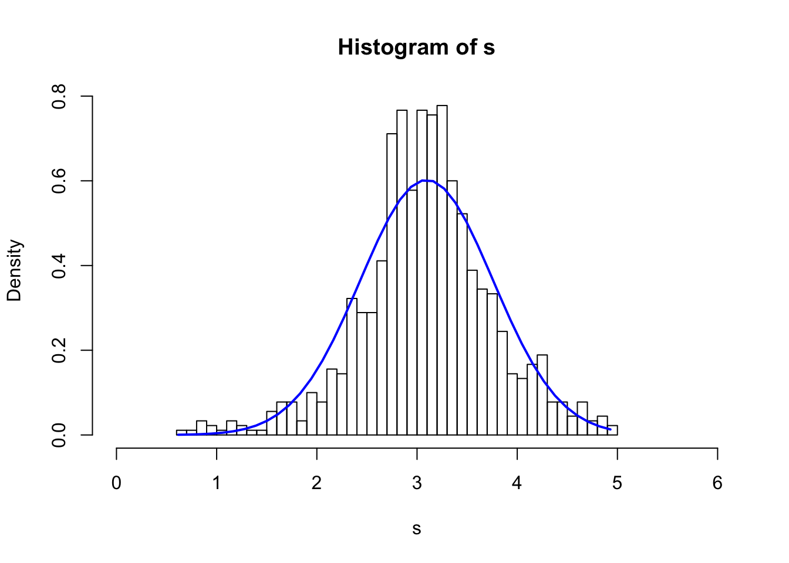

The purpose of this section is to derive the estimators of OLS (Ordinary Least Square), their expectation and variance. \[ y = x\beta + \epsilon\]
\[ \begin{bmatrix} y_{1}\\ y_{2}\\ \vdots\\ y_{T} \end{bmatrix}= \begin{bmatrix} x_{1,1} & x_{1,2} & \dots & x_{1,K} \\ x_{2,1} & x_{2,2} & \dots & x_{2,K} \\ \vdots & \vdots & \ddots & \vdots \\ x_{T,1} & x_{T,2} & \dots & x_{T,K} \end{bmatrix} \begin{bmatrix} \beta_{1}\\ \vdots\\ \beta_{K} \end{bmatrix}+ \begin{bmatrix} \epsilon_{1}\\ \epsilon_{2}\\ \vdots\\ \epsilon_{T} \end{bmatrix} \] note that \[ e = y-x\hat{\beta} \] and
\[\epsilon \neq e\]
Goal: minimize sum of squared residuals \[ min(e^{\prime} e) \] \[ \begin{aligned} e^{\prime} e &= (y-x\hat{\beta})^{\prime}(y-x\hat{\beta}) \\ &= y^{\prime} y - \hat{\beta}^{\prime} x^{\prime} y - y^{\prime} x\hat{\beta} + \hat{\beta}^{\prime} x^{\prime} x \hat{\beta} \\ &= y^{\prime} y - 2\hat{\beta}^{\prime} x^{\prime} y + \hat{\beta}^{\prime} x^{\prime} x \hat{\beta} \\ \end{aligned} \]given that \[ (AB)^{\prime} = B^{\prime} A^{\prime} \] and transpose of a scaler is a scaler \[ y^{\prime} x \hat{\beta} = (y^{\prime} x \hat{\beta})^{\prime} = (x\hat{\beta})^{\prime} y = \hat{\beta}^{\prime} x^{\prime} y \]
\[ \frac{\partial e^{\prime} e}{\partial \hat{\beta}} = -2x^{\prime} y+2x^{\prime} x \hat{\beta} = 0 \]
\[ \Rightarrow x^{\prime} x \hat{\beta} = x^{\prime} y \] \[ \begin{aligned} \Rightarrow \hat{\beta} &= (x^{\prime} x)^{-1}x^{\prime} y ,\,\ (\,if \,\, (x^{\prime} x)^{-1} \,\, exists) \\ &= (x^{\prime} x)^{-1}x^{\prime} (x\beta + \epsilon) \\ &= \beta+(x^{\prime} x)^{-1}x^{\prime} \epsilon \end{aligned} \]\[ E[ \hat{\beta}] = \beta + E[(x^{\prime} x)^{-1}x^{\prime} \epsilon]\]
If \(E[\epsilon] =0\) and \(E[\epsilon | x] = 0\), then \(E[(x^{\prime} x)^{-1}x^{\prime} \epsilon] = 0\) and \(E[ \hat{\beta}] = \beta\).
\(\Rightarrow \hat{\beta}\) is an unbiased estimator.
recall the formula for variance \[Var(A) = E[\,(A-E[A])\, (A-E[A])^{\prime}]\] and the OLS estimator we just derived \[\hat\beta_{OLS} = \beta + (x^{\prime} x)^{-1}x^{\prime} \epsilon\] and if the OLS estimator is an unbiased estimator \[E[\hat\beta_{OLS}] = \beta\] Then \[ \begin{aligned} Var(\hat\beta_{OLS}) &= E[(x^{\prime} x)^{-1}x^{\prime}\epsilon \,\, ((x^{\prime} x)^{-1}x^{\prime}\epsilon)^{\prime}] \\ &=(x^{\prime} x)^{-1}x^{\prime} \,\, E[\epsilon\epsilon^{\prime}] \,\, ((x^{\prime} x)^{-1}x^{\prime})^{\prime} \end{aligned} \] if \(E[\epsilon\epsilon^{\prime}]=\sigma^2I_T\) and \(E[\epsilon|X]=0\) Then \[ \begin{aligned} Var(\hat\beta_{OLS}) &=(x^{\prime} x)^{-1}x^{\prime} \,\, E[\epsilon\epsilon^{\prime}] \,\, ((x^{\prime} x)^{-1}x^{\prime})^{\prime} \\ &=\sigma^2(X^{\prime} X)^{-1} \end{aligned} \] We don’t know the \(\epsilon\)…we only have the estimate of it-the residuals \(e\) where \(e = Y-X\hat\beta_{OLS}\).
Then we estimate the \(\sigma^2\) by \[s^2= \frac{e^{\prime} e}{T-K} \] where \(K\) is the number of explanatory variables
Therefore, our estimate of variance of \(\hat\beta_{OLS}\) becomes \[s^2(X^{\prime} X)^{-1}\] Then the distribution of \(\hat\beta_{OLS}\) becomes a t-distribution with \(T-K\) degree of freedoms with \(mean = \beta\) and \(variance = s^2(X^{^{\prime}} X)^{-1}\)
With the expected value and variance estimated in the above sections, we still need to know the sampling distribution of \(\hat{\beta}_{OLS}\) to perform the significant test
The following code takes a sample of 20 non-i.d.d. variables (Normal, Uniform or Cauchy distributions with different parameters) and simulate 1000 times.
N <- 1000
s <- numeric(0)
for(i in 1:N) {
x1 <- rnorm(1,-2,1)
x2 <- rnorm(1,-1,1)
x3 <- rnorm(1,2,1)
x4 <- rnorm(1,2,0.5)
x5 <- rnorm(1,5,2)
x6 <- rnorm(1,7,2)
x7 <- rcauchy(1,2,1)
x8 <- rcauchy(1,2,2)
x9 <- runif(1,0,3)
x10 <- runif(1,2,3)
x11 <- runif(1,3,5)
x12 <- rnorm(1,2.2,0.8)
x13 <- rnorm(1,6,1)
x14 <- rcauchy(1,2,1.5)
x15 <- runif(1,0,6)
x16 <- runif(1,5,6)
x17 <- rnorm(1,3,1)
x18 <- rnorm(1,10,3)
x19 <- rcauchy(1,2,2)
x20 <- runif(1,-2,8)
s20 <- x1+x2+x3+x4+x5+x6+x7+x8+x9+x10+x11+x12+x13+x14+x15+x16+x17+x18+x19+x20
s20 <- s20/20
s <- c(s, s20)
}
s_95q <- quantile(s,0.95)
s_5q <- quantile(s,0.05)
s <- s[which(s>s_5q & s<s_95q)]
hist(s, breaks = 40, xlim=c(0,6), freq = F)
xfit <- seq(min(s), max(s), length=40)
s_mean <- mean(s)
s_sd <- sd(s)
yfit_density <- dnorm(xfit, mean=s_mean,sd=s_sd)
lines(xfit, yfit_density, col="blue", lwd=2)
\[ y = \beta_0 + \beta_1x_1 + \beta_2x_2 + ...+ \beta_px_p + \epsilon\]
\[H_0: \beta_1=\beta_2 = ...= \beta_p = 0\] \[H_1: \beta_i \neq 0\] Sum of Squared Residuals of the Unrestricted model (the above equation): \[SSR_U = \sum_{i=1}^n e_U^2\] where \(e_R\) is the estimate of \(\epsilon\) by the unrestricted model
The restricted model (No explanatory variables) \[y = \beta_0 + e_R\]
then Sum of Squared Residuals of the Restricted model: \[SSR_R = \sum_{i=1}^n e_R^2\]
\[SSR_R > SSR_U\]
but is it signigicant?
\[F = \frac{(SSR_R-SSR_U)/p}{SSR_U/(n-p-1)}\] Recall the Chi-square distribution - If \(Z_1,...Z_k\) are independent, standard normal random variables, then the sum of their squares,
\[Q = \sum_{i=1}^k Z_i^2\]
\[Q \sim \chi^2(k)\]
where \(k\) specifies the degree of freedom. The F distribution is the ratio of 2 scaled independent Chi-square distribution. The F test requires the sample errors \(e\) ,or \(Z_i\) to be normally distributed.